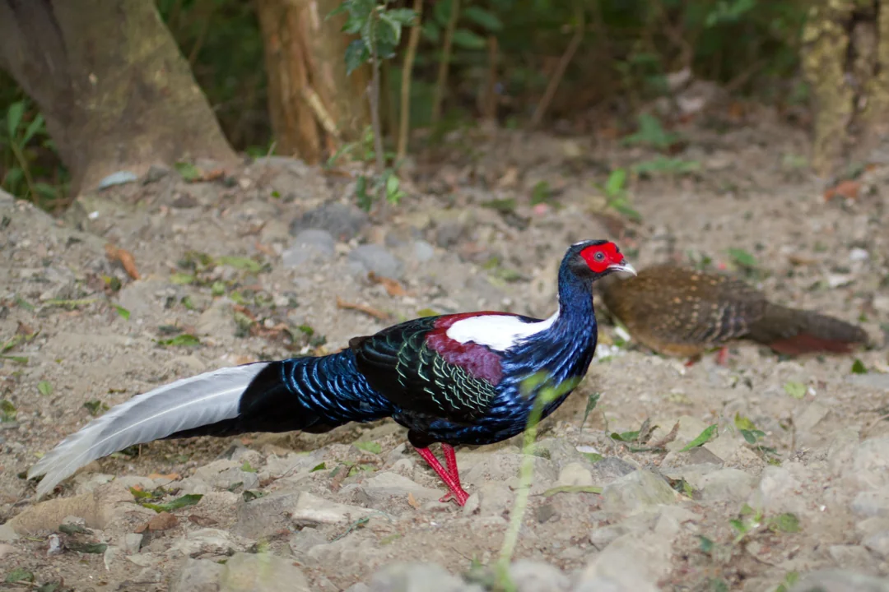
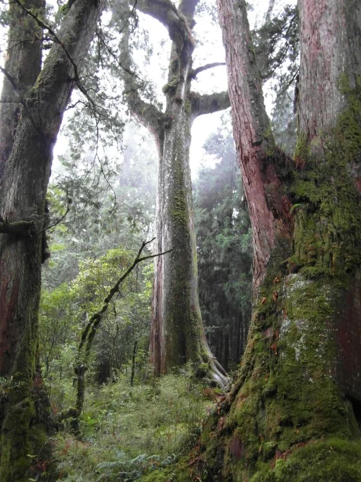
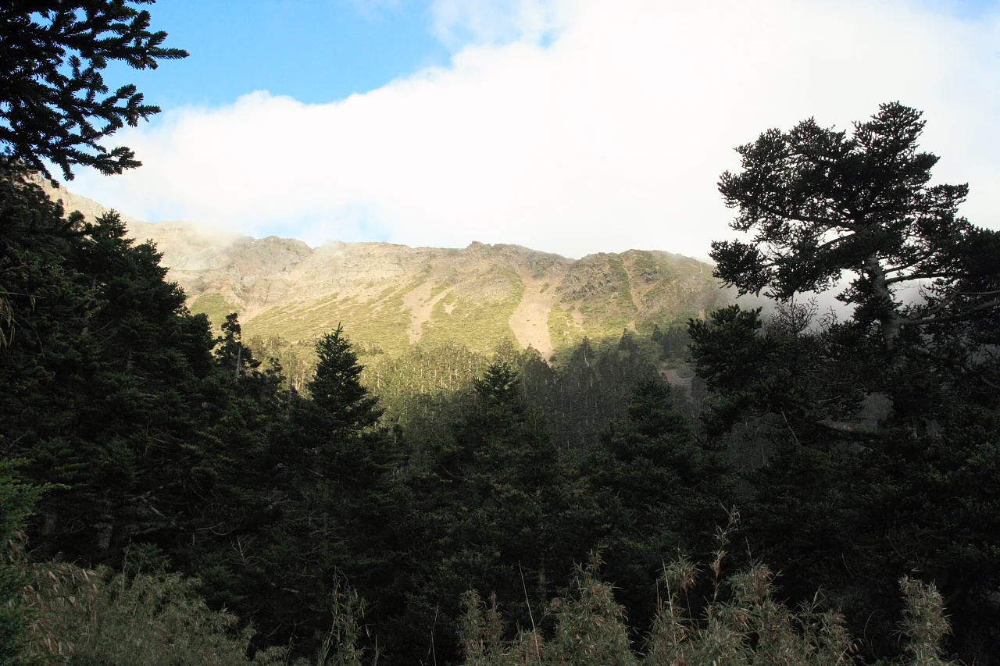

為什麼上山時，看到的樹一路在變？
森林
從低海拔往山上走，同一趟路可以從枝葉遮密的闊葉林，走到檜木與闊葉樹混在一起的林子，最後看見成片的冷杉。
海拔拉開了森林的生長條件
往上爬，氣溫通常會下降。山坡攔截濕空氣時，也可能長時間起霧。不同樹種能生長的條件不同，因而沿著海拔形成一段段的森林群落，稱為森林植群帶。相鄰的植群帶會交錯，山坡朝向和水分也會讓各地的分界有所不同。
同在較低海拔，雨下在哪個季節也有差
在恆春半島，若夏季多雨、冬季相對乾燥，森林會經歷明顯的乾濕季變化。受熱帶季風和季節降雨影響的森林，稱為熱帶季風林。這提供了另一種讀地景的方法。除了看海拔，也可以問一年裡的雨量怎麼分配。
森林如何沿著海拔變換？
較低海拔闊葉林。樟樹、榕樹等樹種有較寬展的葉片。
中海拔針闊葉混生林。紅檜等針葉樹可以和闊葉樹一起生長。
較高海拔針葉林更常見。例如較高處的臺灣冷杉林。
闊葉林
較低海拔的溫暖潮濕山區，樹冠常遮住大部分直射光。
植物樟樹和青剛櫟都有展開的葉片。青剛櫟的果實是有殼斗的堅果，有點像戴著小帽子。
動物藍腹鷴會在山林地面啄食果實、嫩葉，也會翻找落葉下的蚯蚓等小動物。

Cataloging Nature · CC BY 2.0 · 本站縮圖

針闊葉混生林
中海拔的林中，可同時看到高大的針葉樹和較寬葉的闊葉樹。
植物阿里山的紅檜和臺灣扁柏值得留意。檜木的葉片很小，像一片片鱗片貼在小枝上。
動物白面鼯鼠多在夜間活動，展開前後肢之間的皮膜，就能在樹與樹之間滑翔。

Naplee12 · CC BY-SA 3.0 · 本站縮圖

針葉林
更高的山地通常較冷，有些坡面由冷杉或鐵杉等樹種主導。
植物臺灣冷杉的葉片細而扁，毬果長成時向上直立在枝條上。
動物火冠戴菊鳥體型小，會穿梭枝葉間找昆蟲等小型食物。


熱帶季風林
以恆春半島南仁山為例，季風和降雨分布影響森林外觀。
植物墾丁部分林地可見榕樹的根沿著礁岩向下伸展。靠岸的林地則可以找到棋盤腳等耐海風植物。
動物南仁山水域周邊曾記錄五色鳥、紅嘴黑鵯等留鳥，也就是一年四季都可能在當地出現的鳥類。
想一想
藍腹鷴和鼯鼠等動物的活動範圍可以橫跨不同森林類型。這裡列的是適合用來理解棲地的例子。
在同一海拔的兩座山，都會找到一樣的樹嗎？
不一定。就算高度相同，坡向、霧氣和降雨也可能不同，適合生長的樹種會跟著變化。
資料來源
教材｜《高中基礎生物（下）》6-3，頁 136–143